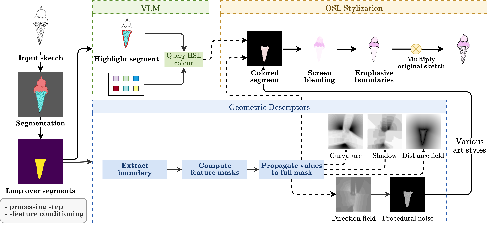
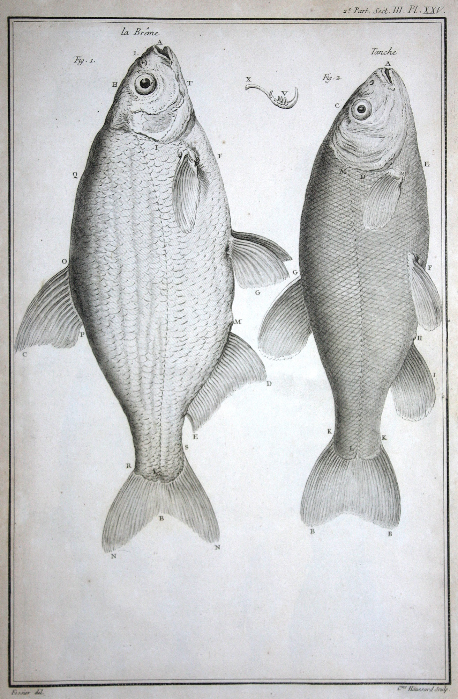
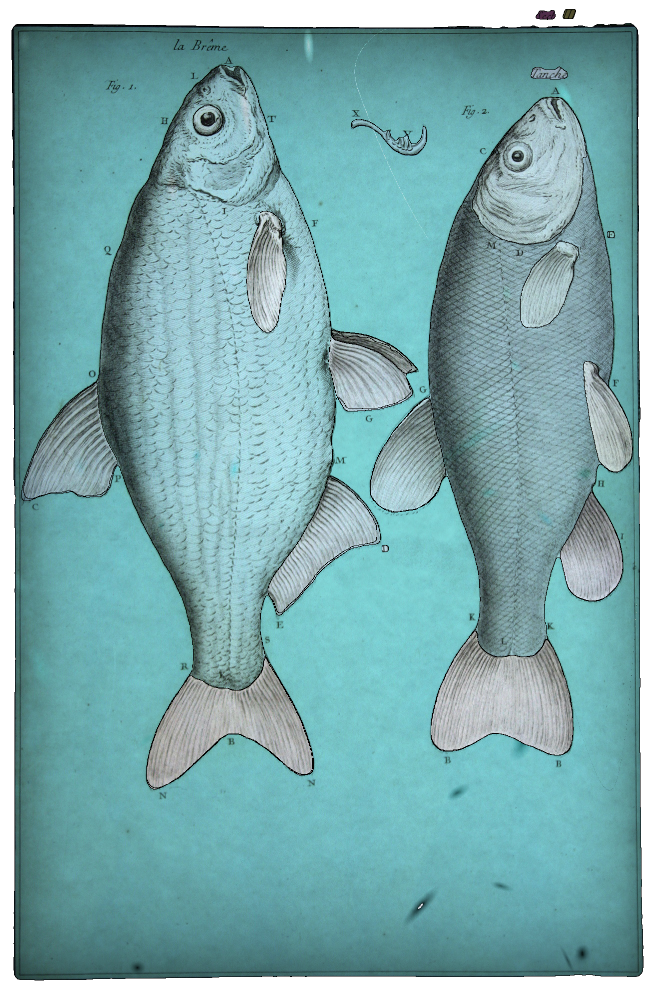
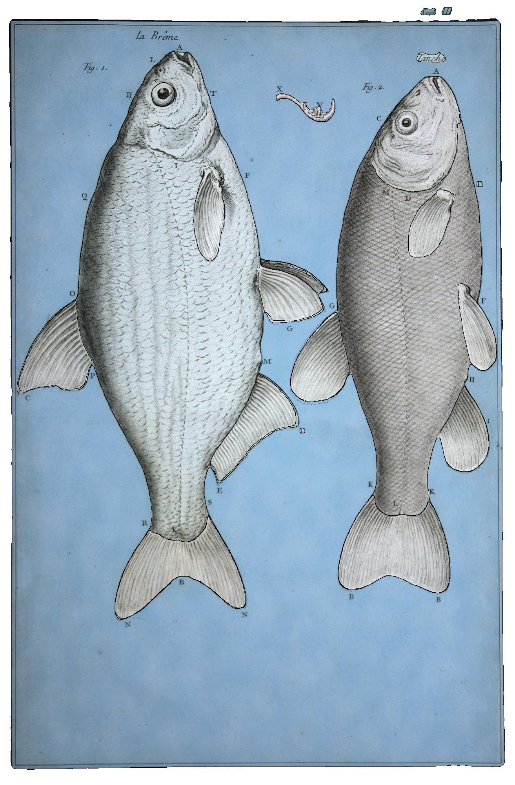
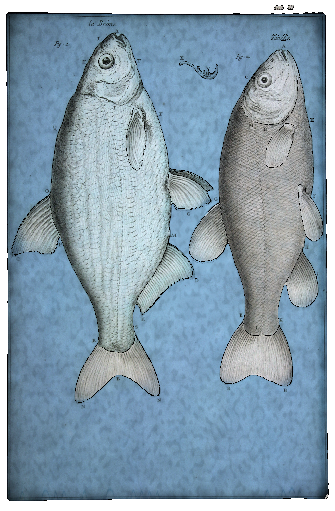
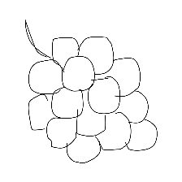
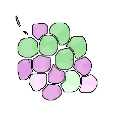
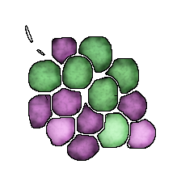

Section 1 Research
Some publications and current work-in-progress.
Subsection 1.1 AI4VA @ ECCV 2026: TexSketch
TexSketch: Bringing Texture-Aware Colorization to Sketches was work done under the Graphics Research Group in IIIT Delhi which was accepted at the AI 4 Visual Arts workshop at the European Conference on Computer Vision, with oral spotlight.

Our pipeline describing the workflow
I came up with a new method to color black-and-white sketches and be able to get programmable art styles using the Open Shading Language. Some pretty pictures:

Fish diagram

Basic coloring using our method

Specialized cel-shading/anime style coloring

Specialized watercolor style coloring

Grapes

Specialized cel-shading/anime style coloring

Specialized watercolor style coloring
The developed method is completely autonomous - just an input sketch is provided, no additional color hints or segments are required. We do that automatically. Color pallette hints may be produced in the prompt given to the vision model, if required.
Relevant links:
- Website
- GitHub
- Paper
- Graphics Research Group, IIIT Delhi
Subsection 1.2 STEMvibe Research
Formed and currently lead the research department of STEMvibe.
Subsubsection 1.2.1 ContrastGuidedMath
Working on ContrastGuidedMath (CGM), a competition dataset with pedagogical reasoning and understanding the effects of structured reasoning on large language models.
Currently under review at the MATH-AI workshop in NeurIPS, where I also served as a reciprocal reviewer.
This work was inspired by the third progress prize of the AIMO on Kaggle, funded by XTX Markets.
| Model | CGM FT | Valid / 500 |
|---|---|---|
| Qwen2.5-Math-7B | ✓ | 480 |
| Qwen2.5-Math-1.5B | ✓ | 150 |
| GPT-oss-20B | — | 85 |
| Llama-3.1-8B | — | 11 |
| Qwen2.5-Math-7B | — | 2 |
| Qwen2.5-Math-1.5B | — | 0 |
The Table 1.9 showcases an inferior model on our fine-tuned annotation schema performing vastly better than a stronger open-weight. For the exam CGM schema, please refer to Kaggle dataset, linked below.
| CGM Variant | Accuracy | Avg. hints |
|---|---|---|
| Full | 70.9% | 2.03 |
| No hints | 41.8% | — |
| No facts | 76.4% | 2.48 |
| Base | 27.3% | — |
|
\begin{equation*}
\leq k
\end{equation*}
|
Hints | Hints + Facts |
|---|---|---|
| 1 | 29.1% | 32.7% |
| 2 | 43.6% | 50.9% |
| 3 | 58.2% | 61.8% |
| 4 | 67.3% | 65.5% |
| 5 | 70.9% | 70.9% |
| 6 | 76.4% | 70.9% |
Table 1.10 shows the use-case of the CGM dataset at inference-time, rather than during fine-tuning. The model is prompted to solve the problem, and the prompt itself carries additional information from the CGM dataset.
Table 1.11 evaluates whether hints and facts are actually useful in problem-solving.
The core motivation of the CGM dataset is to evaluate whether a model does better at problem solving if it can first decompose the problem into its constituting domain-dependent facts and possible attack vectors (or hints). The results show promise at inference-time. Results of fine-tuned models are currently under development.
Relevant links (the current CGM dataset is private due to the double-blind review, the links below are of the older AIMO3 dataset which inspired the ongoing development):
- Kaggle Dataset
- Kaggle Discussion